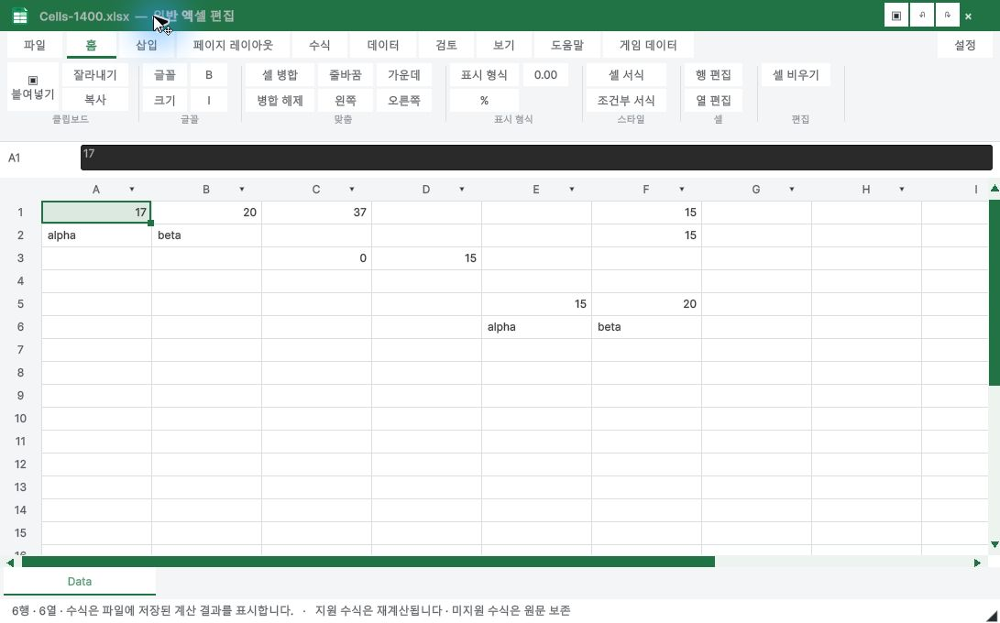
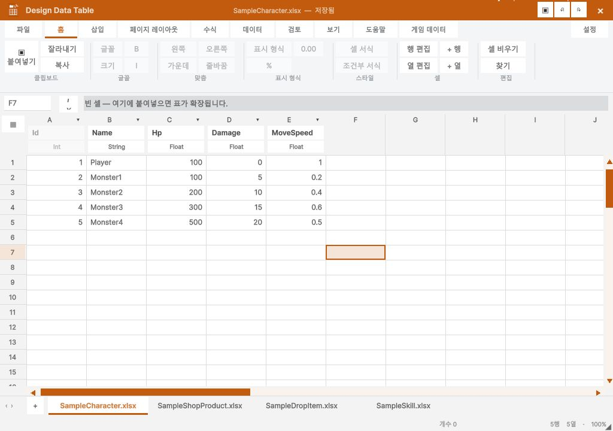

Reference: Microsoft Support screenshots and formatting documentation. The reference covers Excel 2024/2021 and includes desktop and web sections; it is not a verified current Microsoft 365 desktop build. An Excel 2016 desktop training reference was used for tab/group order.
| Area | Applied | Remaining difference |
|---|---|---|
| Tabs | File, Home, Insert, Page Layout, Formulas, Data, Review, View, Help; Game Data extension | Optional Draw/Automate/Developer/contextual tabs are not replicated |
| Home | Clipboard, Font, Alignment, Number, Styles, Cells, Editing; large Paste; quick access | Font/number details use our Format Cells popup; icons and control geometry are not identical |
| Game Data | Same structure, orange identity | Typed game editor does not apply workbook presentation formatting; controls disabled |
| Page Layout / Review | Tab positions retained | Print/page setup and full Excel review commands are not implemented |


Native UI check: A1 bold via Home button, dirty title, Ctrl+Z restored regular font and clean title. This is a layout and supported-command update, not full Excel parity or native Excel execution acceptance.